라이프치히 전투 (43) - 영웅, 강에 지다
게시: 2026-04-20T06:30:29+09:00
엘스터교가 폭파되는 바람에 어쩔 수 없이 습지대인 북서쪽으로 방향을 튼 병사들은 먼저 라이헬 정원(Reichels Garten)과 루돌프 정원(Rudolphs Garten)이라는 공원들을 통과해야 했습니다. 정원이니 공원이니 하니까 잘 가꿔진 산책로를 통해 편하게 지나갈 수 있을 것 같은데, 그게 쉽지가 않았습니다. 이미 말씀드렸듯이 이곳 라이프치히 북서쪽의 평원은 우기에 주기적으로 홍수가 나는 범람원이었습니다. 이 커다란 정원들을 만들 때도, 먼저 대규모 배수 작업을 하고 여러 수로들을 파는 등의 많은 노력을 들여야 했습니다. 즉, 이 공원들 내부에도 수로가 복잡하게 얽혀 있었습니다. 공원 안의 수로라고 하면 그냥 아담한 도랑 같은 것을 기대할 수도 있으나, 이 수로들은 갈 길이 급한 병사들에게 큰 장애물이 되었습니다. 그런 수로 중 하나인 엘스터뮐그라벤(Elstermühlgraben, 엘스터 제분소 도랑)은 그 이름 자체가 뜻하는 것처럼 원래 물레방아를 돌리던 수로로서 규모가 작지 않았습니다. 이런 수로들은 사유지인 정원들의 경계를 표시하는 동시에 도둑 등의 침입을 막는 역할을 해낼 정도로 넓고 깊어서, 딥스그레벤(Diebsgräben, 도둑 참호)이라고 불릴 정도였습니다.
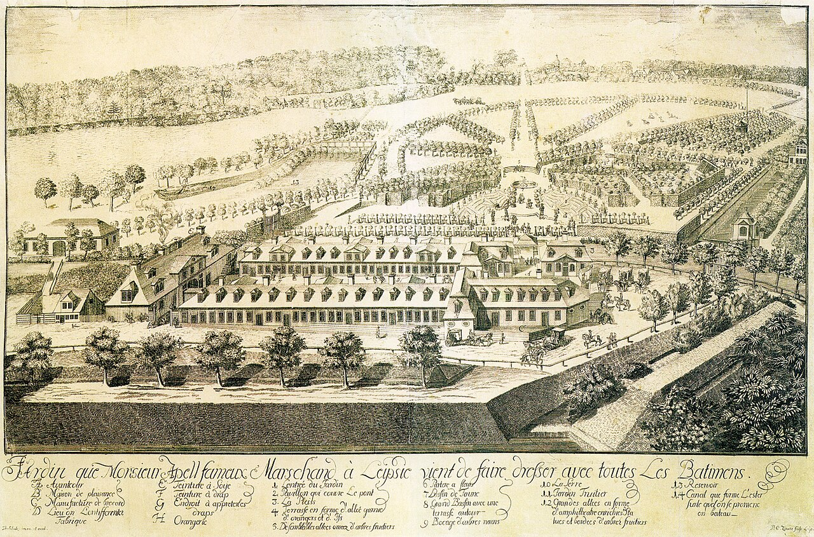
(라이프치히 북서쪽의 넓은 평원에는 원래 아펠스가르텐(Apels Garten, 아펠 정원)이라는 바로크 양식의 넓은 공원이 있었습니다. 17~18세기에 라이프치히의 상업이 번영하게 되면서 성공한 대상인들은 교외에 자신의 이름을 딴 대규모 프랑스식 공개 정원을 만드는 것이 유행으로 번졌습니다. 이 아펠 정원도 마찬가지인데, 이미 말씀드렸듯이 이곳 라이프치히 북서쪽의 평원은 우기에 주기적으로 홍수가 나는 범람원이었습니다. 아펠은 아펠 정원을 만들면서 대규모 배수 및 수로 작업, 그리고 타지의 흙을 이곳에 쏟아부어 토대를 높이는 등의 많은 노력을 들여 여기에 멋진 정원을 만들었습니다. 아펠 정원은 1786년 라이헬이라는 상인이 이 공원을 인수하면서 라이헬 정원(Reichels Garten)으로 이름이 바뀌었으므로, 당시 나폴레옹과 그 부하들은 이곳을 라이헬 공원으로 알고 있었을 것입니다.)
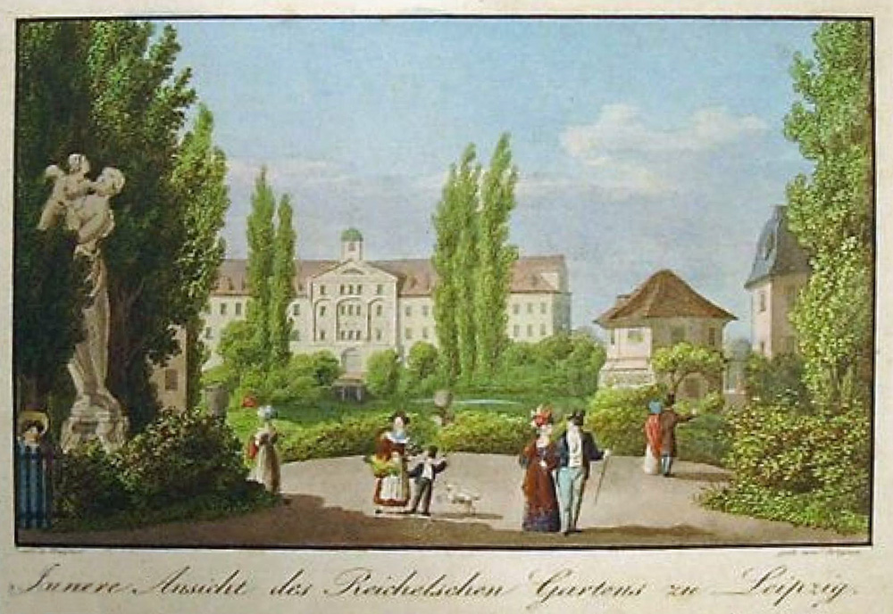
(1830년 경의 라이헬 정원의 모습입니다. 라이프치히도 도시의 팽창에 따라 주택난이 심각하여, 아직 여기가 아펠 정원이던 18세기 후반에도 이미 정원 일부가 주택지로 분할되어 팔려나간 뒤여서 규모가 꽤 줄어 있었습니다. 결국 라이헬 공원도 조금씩 주택지로 재개발되어 원래의 모습을 잃었습니다.)
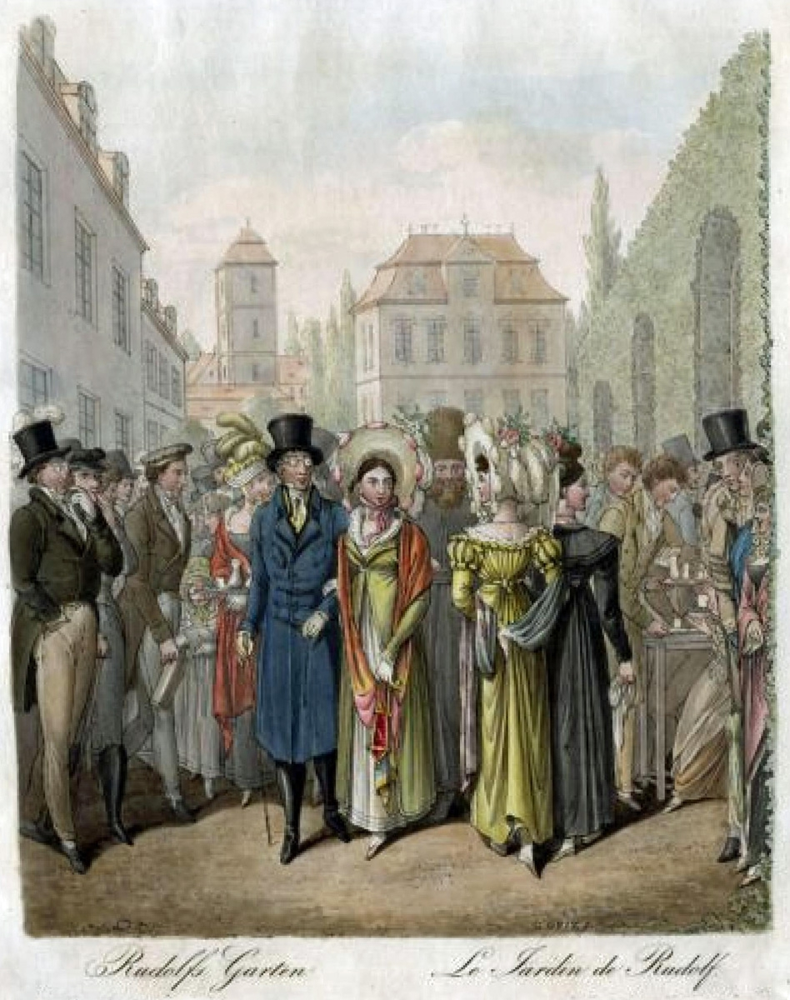
(루돌프 정원(Rudolphs Garten)도 라이헬 정원 바로 옆에 위치한 바로크식 공개 정원입니다. 이 모습은 1825년 경에 그려진 루돌프 정원의 모습입니다.)
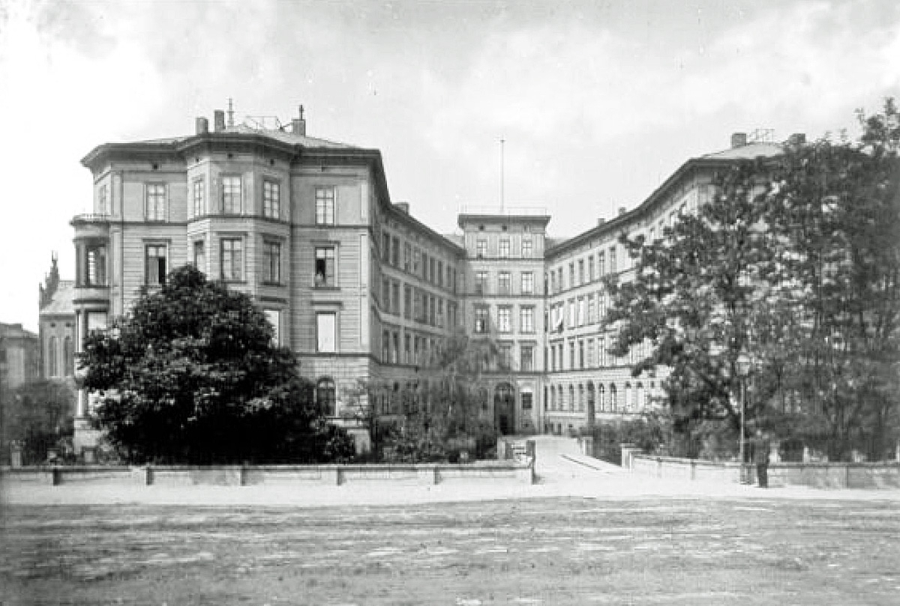
(라이프치히도 우리나라처럼 아파트 열풍이 불었는지, 루돌프 정원도 결국은 주택단지 부지로 재활용되었습니다. 그 자리엔 1848년, 사진과 같은 말편자 모양의 독특한 주거용 빌딩인 Hufeisen (후프아이젠, 글자 그대로 말편자)이 들어섰는데, 이 인상적인 빌딩은 거의 100년 동안 잘 있다가 WW2 때 연합군의 폭격으로 박살이 나서 없어졌고, 지금은 그냥 초지가 되어 있습니다.) 그렇게 라이헬 정원을 통해 엘스터 강으로 향하던 병사들 중에는 제8군단 소속 폴란드 병사들이 많이 있었고, 그들의 사령관인 포니아토프스키도 그들과 함께 살 길을 찾아 말을 달리고 있었습니다. 이 엘스터뮐그라벤이 앞에 나타나자, 포니아토프스키는 망설이지 않고 말을 몰고 그 속으로 뛰어들었습니다. 이런 수로를 건널 때는 말을 타고 건너는 것이 훨씬 유리했으니까요. 두 다리로 뛰는 부하들에 비하면 호강이라고 생각할 수도 있었으나, 꼭 그렇지만도 않았습니다. 포니아토프스키는 그 날 당일인 10월 19일 오전에도 부상을 당했지만, 이미 며칠 전인 14일과 16일에도 각각 부상을 입은 상태였기 때문이었습니다. 문제는 그런 수로의 바닥에는 온갖 퇴적물이 잔뜩 쌓인 진흙뻘이었다는 점이었습니다. 말발굽이 그런 진흙에 박혀 빠져나오지 않자, 결국 포니아토프스키는 말안장에서 내려 물에 뛰어들었고, 이번에는 빠져죽지 않기 위해 여기저기 부상 당한 몸으로 헤엄을 쳐야 했습니다. 흔한 오해 중 하나가 포니아토프스키가 이때 엘스터뮐그라벤에서 죽었다는 것입니다만, 그는 간신히 수로의 반대편 기슭에 도착하여 참모들의 도움을 받아가며 뭍에 기어오를 수 있었습니다. 기진맥진한 그는 참모들이 구해온 다른 말을 타고 넓은 라이헬 정원을 가로질러 엘스터 강변으로 갔습니다.
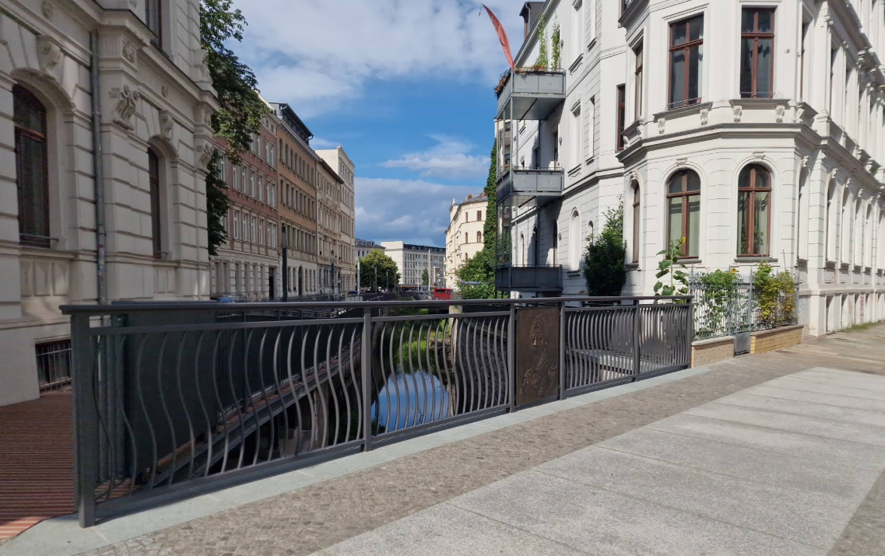
(포니아토프스키가 빠져죽은 강이 이 엘스터뮐그라벤이라는 이야기가 나올 만도 한 것이, 이렇게 현재 라이프치히의 엘스터뮐그라벤 수로에는 포니아토프스키교(Poniatowskibrücke)라는 다리까지 있습니다.)
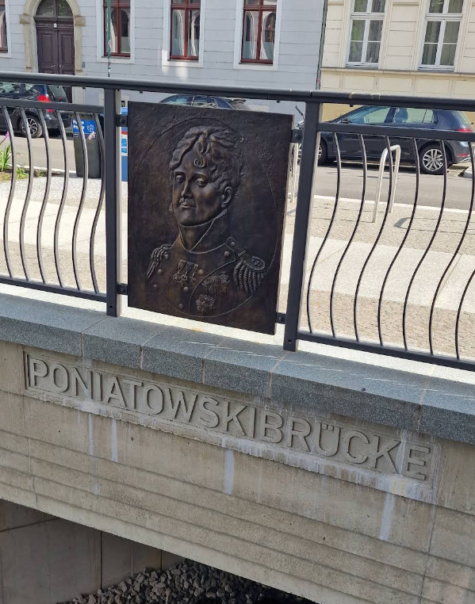
(이 포니아토프스키 다리(Poniatowskibrücke) 난간에는 저렇게 포니아토프스키의 초상화가 양각으로 새겨진 부조까지 달려 있습니다.) 엘스터 강변에 도착해보니, 강물이 생각보다 거셌습니다. 사흘 전에 내린 비로 인해 물이 불어났던 것입니다. 하지만 우물쭈물할 때가 아니었습니다. 그들은 쫓기는 입장이었고, 바로 뒤에서는 뒤처진 아군 병사들을 연합군 유격병들이 총검으로 찌르고 있는 상황이었습니다. 포니아토프스키는 다시 말을 몰고 엘스터강으로 뛰어들었습니다. 라이프치히 북서쪽의 엘스터강은 지금은 그다지 큰 강이 아니지만, 당시엔 이야기가 좀 달랐습니다. 등 뒤에서 쫓아오는 연합군의 총검을 피해 급한 마음에 무작정 엘스터강에 뛰어든 병사들 중 상당수는 끝내 강 건너편에 닿지 못하고 거센 물살 속에서 익사했습니다. 배낭, 크로스밴드나 탄약낭(giberne) 등은 버린다고 해도, 당시의 울 재질의 꽉 끼는 군복을 코트까지 입은 상태로 물 속에 뛰어들었다면 정말 헤엄치기 어려웠을 거거든요. 몇 명 정도가 익사했는지는 당시에도 불분명했는데, 수백이라는 이야기도 있고 수천이라는 이야기도 있습니다만, 수천은 좀 과장된 것 아닐까 합니다. 확실한 것은 몇몇 병사들은 용케 건너편 기슭까지 헤엄쳐 건너는데 성공했다는 것입니다. 그렇게 헤엄쳐서 엘스터강을 건너는데 성공한 사람 중에는 후위대 총사령관인 막도날 본인도 있었습니다.
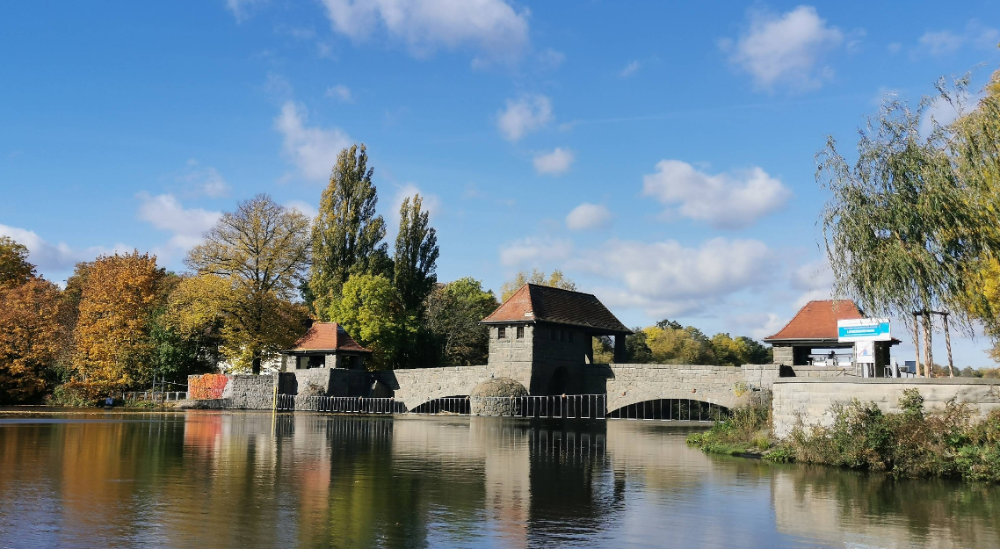
(엘스터, 정확하게는 바이스 엘스터(Weiße Elster, 하얀 엘스터) 강입니다. 지금의 엘스터강은 1813년과는 달리 많은 정비가 이루어졌기 때문에 당시 엘스터강의 폭과 깊이가 어느 정도였지는 명확하지 않습니다.)
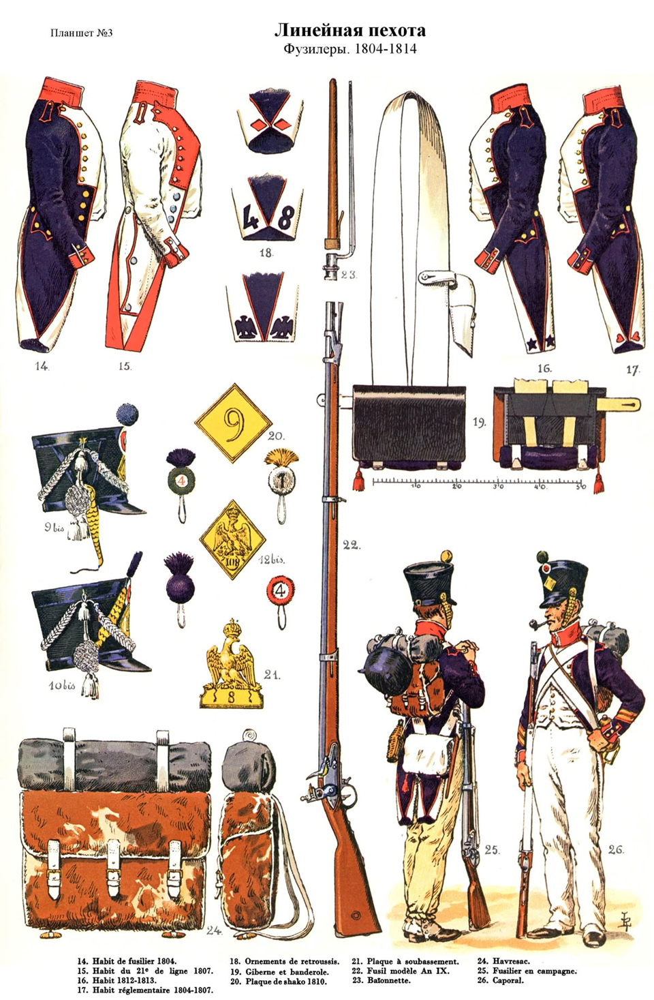
(당시 병사들의 군복은 양털로 만든 울(wool)로 만들었고, 그 밑의 속옷은 땀 흡수가 거의 안 되는 린넨, 즉 아마포로 만들었습니다.)
(위대한 장군이자 강인한 수영 선수 막도날(Étienne Macdonald) 원수입니다. 그는 이름에서 알 수 있듯이 원래 스코틀랜드 집안 출신인데, 그의 아버지는 영국 왕위 계승 투쟁에서 패배한 찰스 스튜어트(Charles Edward Stuart) 지지자로서 찰스 스튜어트를 따라 프랑스로 망명한 병사들 중 하나였는데, 나중에 결혼을 통해 귀족 작위를 얻습니다. 막도날은 그렇게 좀 애매한 신분이어서 그랬는지 프랑스군에는 자리를 얻지 못했고 네덜란드에서 모병된 아일랜드 자원병 부대에서 장교 생활을 시작했습니다. 그는 프랑스 대혁명이 발발했을 때 그 부대 장교 대부분이 부르봉 왕가에 충성한 것에 비해 유일하게 혁명파였는데, 이유는 당시 사귀던 아가씨인 마리-콩스탕스(Marie-Constance Soral de Montloisir)의 부친이 열렬한 혁명지지자였기 때문이었습니다. 마리-콩스탕스와는 2년 뒤에 결혼했으나, 그 여자는 불행히도 결혼한지 6년만에 사망합니다. 그는 1802년에 재혼했는데, 재혼한 여성도 불과 2년만에 사망합니다. 세 번째 결혼은 나폴레옹 패망 이후인 1821년에 했는데, 정말 희한하게도 또 4년만에 와이프가 사망했습니다.) 그런 병사들에 비하면 포니아토프스키는 말을 타고 있었으니 분명히 훨씬 더 유리했습니다. 아마 살아서 건너편 강변에 닿은 막도날도 말을 타고 강을 건넜을 것입니다. 그러나 포니아토프스키가 아직 강물 속에서 사투를 벌이고 있을 때, 어디선가 날아온 총알 하나가 그의 상체 옆구리를 뚫고 들어와 반대편을 뚫고 나갔습니다. 일설에 의하면 이 머스켓 총탄은 아직 저 멀리 있던 연합군 측에서 날아온 것이 아니라 혼란에 빠진 아군이 쏜 것이라고도 합니다만, 아무튼 일세의 영웅인 포니아토프스키는 말안장에서 쓰러져 강물에 떠내려갔습니다. 정말 허무한 최후였습니다.
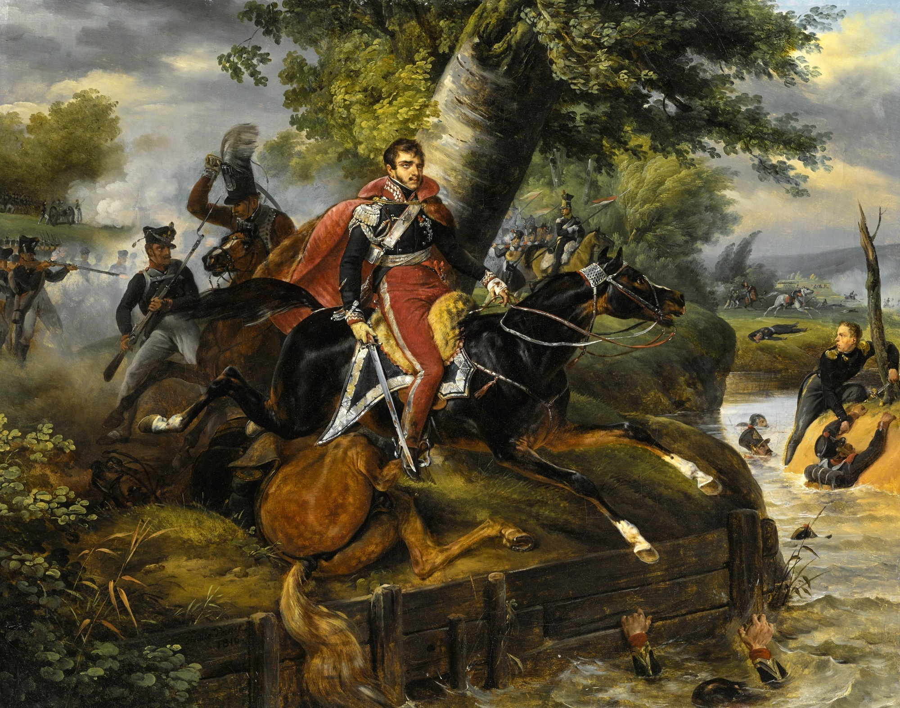
(1813년 10월 19일, 엘스터강에 뛰어드는 포니아토프스키의 모습입니다. 1816년에 그려진 것으로서, 베르네(Horace Vernet)의 작품입니다.)
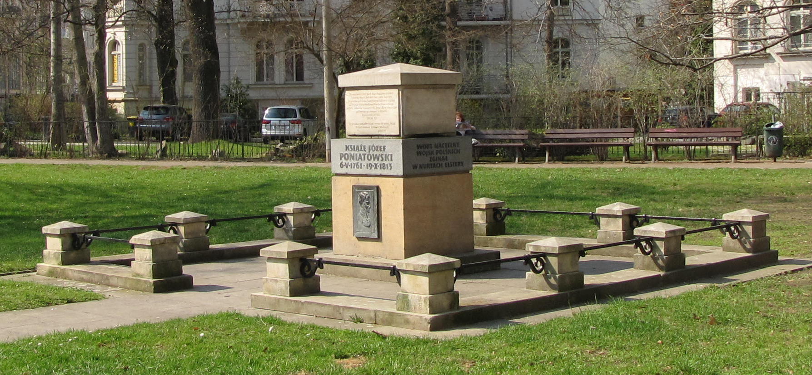
(이 포니아토프스키 추모비는 라이프치히 북동쪽, 그가 건넜던 라이헬 정원 옛자리 구석에 세워진 것입니다. 포니아토프스키의 시신은 5일 후인 10월 24일, 어떤 어부들에 의해 발견되었습니다. 그의 시신은 라이프치히 시내의 그림마 성문 근처에 있는 성 요한 (St. Johannis) 교회로 옮겨져 거기서 방부 처리(embalm)를 한 뒤 제대로 된 군사 의례와 함께 그 교회 묘지에 매장되었습니다. 그 후 1814년 짜르 알렉산드르의 동의 하에 그의 시신은 바르샤바 한 가운데의 성십자가 교회(Kościół Świętego Krzyża)으로 이장되었다가, 1817년에 다시 크라코프(Krakow)의 바벨 성당(Katedra Wawelska)으로 다시 이장되었습니다.) (
포니아토프스키의 시신이 안장되었던 바르샤바 성십자가 교회는 '교회'라고는 하지만 당연히 카톨릭 교회입니다. 지금은 저렇게 복구되었지만 1944년 바르샤바 봉기 때 독일군이 요새화하여 방어거점으로 썼고, 그걸 바르샤바 봉기군이 탈환했다가 다시 독일군에 의해 폭파되는 바람에 약 절반 정도가 파손되습니다.)
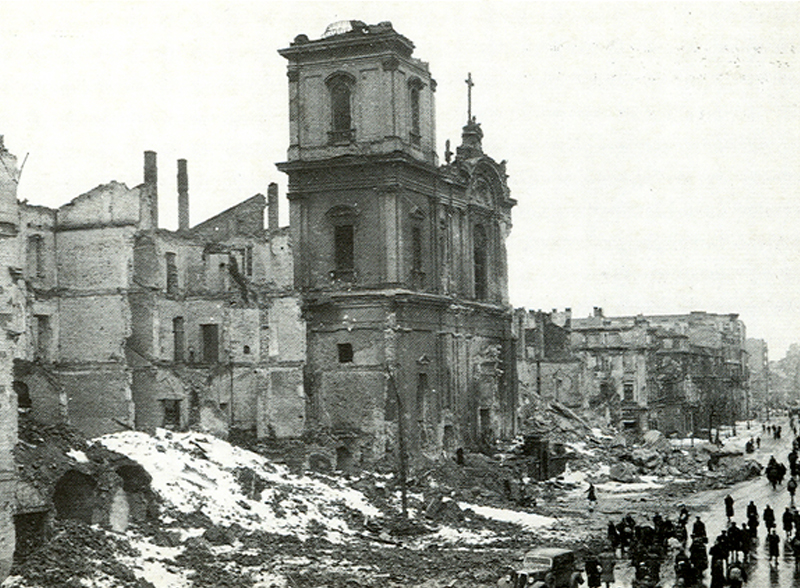
(1944년 바르샤바 봉기 이후의 성십자가 교회의 모습입니다. 폴란드 바르샤바는 깔끔한 현대적 도시지만 별로 인기 있는 관광지가 아닌데, 이유는 그때 도시 전체가 다 파괴되어 관광객을 유인할 역사적 명소가 별로 없기 때문입니다. 서울도 화려한 강남이 아니라 광화문 일대가 가장 인기 있는 관광명소인 것과 비슷합니다.)
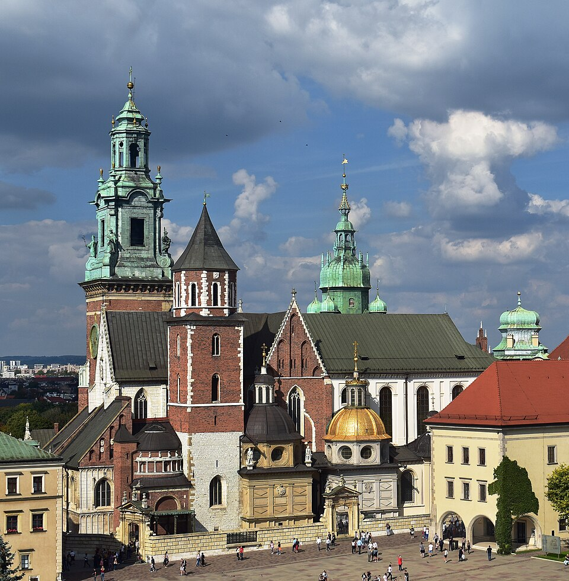
(크라코프의 바벨 성당입니다. 포니아토프스키의 유해를 3년 만에 바르샤바에서 다시 여기로 옮긴 것이 의아하실 수 있는데, 이건 포니아토프스키에 대한 격하가 아니라 격상이었습니다. 이 바벨 성당은 전통적으로 폴란드 왕들의 즉위식이 벌어진 곳이자 왕들의 시신이 안장되는 곳이기 때문이었습니다. 비슷한 시기에 폴란드의 위대한 독립투사였던 코시치우슈코(Tadeusz Kościuszko)의 시신도 이 곳으로 안장되었고, 이들의 존재로 인해 이 바벨 성당은 마치 폴란드판 '팡테옹'(Pantheon)의 위상을 갖게 되었습니다.) 이렇게 포니아토프스키는 목숨을 잃었지만, 아직 라이프치히에는 탈출하지 못한 병력이 3만 가까이 남아 있었습니다. 뿐만 아니라 나폴레옹이 러시아에서 탈출할 때도 끝까지 끌고 다닐 정도로 중요시하던 대포도 200문 정도 남아 있었고, 장군 30명 정도도 있었습니다. 그렇게 엘스터강을 건너지 못한 장군들 명단에는 레이니에와 로리스통 등의 고위급도 즐비했습니다. 이들의 운명은 어떻게 되었을까요? Source : The Life of Napoleon Bonaparte, by William Milligan Sloane Napoleon and the Struggle for Germany, by Leggiere, Michael V With Napoleon's Guns by Colonel Jean-Nicolas-Auguste Noël https://www.britannica.com/event/Napoleonic-Wars/Dispositions-for-the-autumn-campaign http://www.historyofwar.org/articles/campaign_leipzig.html https://warhistory.org/@msw/article/leipzig-battle-of-the-nations https://www.encyclopedia.com/history/encyclopedias-almanacs-transcripts-and-maps/leipzig-battle-0 https://warfarehistorynetwork.com/article/death-knell-for-napoleons-empire/ https://www.historyofwar.org/articles/battles_leipzig_19_october.html https://www.napoleon-series.org/military-info/battles/leipzig/c_leipzigoob10.html https://de.wikipedia.org/wiki/Apels_Garten https://de.wikipedia.org/wiki/Rudolphs_Garten https://en.wikipedia.org/wiki/J%C3%B3zef_Poniatowski https://en.wikipedia.org/wiki/%C3%89tienne_Macdonald https://pl.wikipedia.org/wiki/Bazylika_%C5%9Awi%C4%99tego_Krzy%C5%BCa_w_Warszawie https://pl.wikipedia.org/wiki/Bazylika_Archikatedralna_%C5%9Bw._Stanis%C5%82awa_i_%C5%9Bw._Wac%C5%82awa_w_Krakowie https://pastnow.wordpress.com/2013/10/19/october-19-1813-disastrous-retreat/ https://au.pinterest.com/pin/732116483186578411/